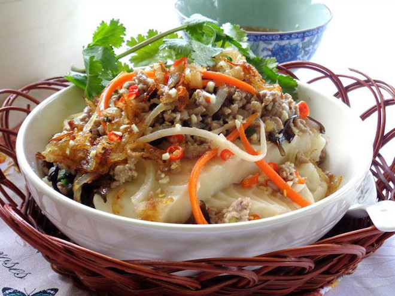

Vải thiều Lục Ngạn
Khỏi phải bàn đến độ nổi tiếng khắp thế giới mỗi khi nhắc đến vải thiều xứ này. Quả vải to tròn, ngọt lịm, vỏ mỏng, hạt nhỏ, cùi dày là những điểm khiến cho bất kỳ ai ăn một lần cũng đều mê tít. Vào mùa vải, khắp miền Lục Ngạn đâu đâu cũng chỉ thấy vải là vải, tạo lên một khung cảnh hẫp dẫn bao người.
Bánh đúc Đồng Quan

Bánh đúc ở đây được nhiều người yêu thích bởi bánh vừa dẻo, vừa mát. Miếng bánh đúc trắng ngần, bóng mịn, lấm tấm mấy hạt lạc bùi bùi, giòn sần sật. Ăn bánh đúc phải chấm với tương bần, những hương vị đó hòa quyện thành vị quê nồng đượm, hấp dẫn bao người.
Mì Chũ
Nói tới mì Chũ thì không đâu có thể ngon như ở Bắc Giang. Mì Chũ được làm từ gạo Bao Thai Hồng nên sợi mì dẻo, mịn, bó nhỏ, thường được sử dụng như mì ăn liền, có lẽ mì Chũ ngon nhất là dùng trong khi ăn lẩu.
Bánh đa Thổ Hà
Bánh đa Thổ Hà là một trong những đặc sản có tiếng ở đây mà hầu như du khách nào cũng mua khi ghé thăm nơi này. Bánh đa nổi tiếng bởi hương vị thơm ngon rất riêng, bởi nó được lựa chọn nguyên liệu kỹ càng và cách chế biến độc đáo. Bánh có 2 loại là bánh đa nướng và bánh đa nem. Bánh đa nướng có màu vàng rộ, giòn tan, khi ăn có vị thơm bùi của vừng và lạc. Còn bánh đa nem có màu trắng vừa phải, mềm dẻo, dai và ngon, có đường kính khoảng 40cm.
Chè kho Mỹ Độ
Hương đậu xanh, hương vừng, vị ngọt thanh của đường kính, vị béo thoang thoảng của mỡ, chất đậm đà của đậu hòa quyện vào nhau làm cho món chè kho này trở nên thơm ngon. Chè thường được người dân nấu để cúng vào các dịp lễ tết hay rằm, nên nếu du khách đi vào trúng dịp đó thì sẽ có cơ hội thưởng thức.
Bánh vắt vai
Đây là loại bánh độc đáo chỉ có ở vùng núi Bắc Giang. Nguyên liệu làm bánh vắt vai gồm có gạo nếp, đường, đậu xanh, lá chuối, đặc biệt là có thêm rau ngải cứu... Gạo nếp nghiền nhỏ bằng cối xay đá, còn lá ngải cứu luộc lẫn nước vôi trong cho bớt vị chát, đắng, sau đó nghiền nhỏ trộn cùng bột nếp. Sau khi nặn và gói xong, bánh được luộc cách thủy khoảng 2 giờ đồng hồ, vớt ra để ráo nước là có thể dùng được.
Rượu làng Vân
Có thể nói rượu làng Vân là niềm tự hào của người dân nơi đây vì nó còn giữ nguyên được những hương vị truyền thống. Rượu được làm từ cơm nếp, còn men rượu làm từ 36 vị thuốc bắc quý hiếm nên hương vị của rượu không thể lẫn vào đâu được.
Bún Đa Mai
Sợi bún màu trắng toát như sợi bánh bột lọc, mùi thơm, để cả ngày không hư. Sau một thời gian, bún hiện nay đã có chỗ đứng khá vững trên thị trường. Bún Đa Mai được chia làm 4 loại là bún rối, bún vẩy ốc, bún con ba và bún vẩy.
Tin tức 24h